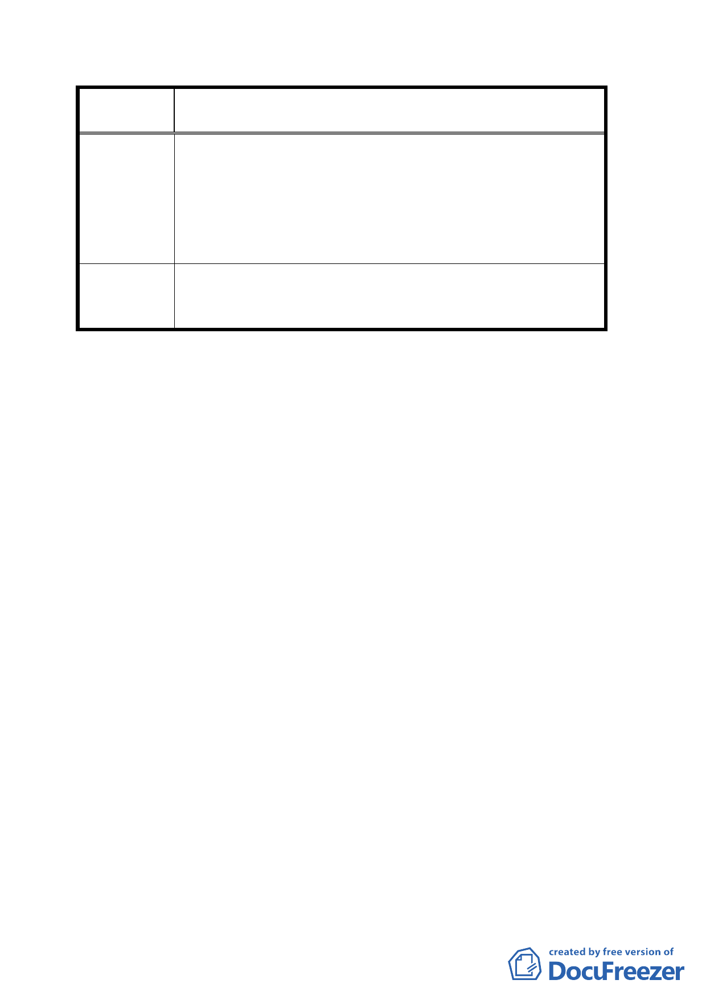

案
名
變更台北市大安區金華段二小段一九九地號土地第
三種住宅區為第三種住宅區（特）計畫案
茲提供台北清真寺之東面立視圖，請比對計畫案平面位置
示意圖，將新建築物之東面立視圖套入台北清真寺之東面
建議辦法
立視圖，確實評估在圖面上所顯示出之景觀影響程度。台
北清真寺主建築物禮拜大殿之大圓頂，離地面高度為 17 公
尺，如新建築物降為六樓高度，影響景觀程度較小，多餘
之容積率應可比照古蹟保存區，移轉至其他承接基地。
委員會決議 本案建築高度同意公展計畫以二十二．八公尺為上限。
討論事項四
案名：變更臺北市中山區德惠段一小段一九五之一地號機關
用地（沙烏地王國駐華大使館用地）為機關用地（供
文化設施使用）計畫案
說明：
一、本件係市府以九十三年五月七日府都規字第０九三０六二
九七二０三號函送到會，並自九十三年五月十日起公開展
覽三十天。
二、法令依據：都市計畫法第二十七條第一項第四款。
三、變更位置：詳位置圖所示。
四、變更理由及內容：詳計畫書。
五、說明會日期：九十三年五月二十一日
六、公民或團體所提意見：無。
決議：本案除都市設計管制要點須加註「本案所須留設之計程
車招呼站應由基地內自行吸納」及「基地西、南側指定
留設帶狀式開放空間（以三公尺為原則）」等說明外，其
餘照案通過。
第 8 頁，共 9 頁